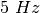
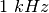
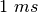
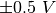

Note
Les programmes à interface graphique décrit dans les chapitres précédents sont prévus pour un ensemble fini d’expériences. Pour développer de nouvelles expériences, on doit savoir comment accéder aux fonctionnalités d’expEYES par logiciel. Les appels de fonctions importants pour communiquer avec l’appareil sont donnés ci-dessous.
Établir la Connexion
Pour accéder au matériel de EYES17, les modules Python pour eyes17
doivent être installés. Il sont censés se trouver dans un répertoire
nommé eyes17, qui pourrait être dans votre répertoire personnel
ou sur le «Python PATH».
Tout programme doit commencer par les deux lignes suivantes:
import eyes17.eyes
p = eyes17.eyes.open()
La variable p est l’objet logiciel qui représente le matériel.
Les sections suivantes expliquent les appels de fonctions Python pour accéder au matériel EYES17. Chaque appel de fonction est expliquer avec un exemple d’utilisation.
set_pv1(v), set_pv2(v)
Règle la tension continue en PV1 et PV2. L’intervalle pour PV1 est de -5 à 5. L’intervalle pour PV2 est de -3,3 à 3,3.
print p.set_pv1(4)
print p.set_pv2(2.1)
La valeur assignée à la sortie est affichée. Mesurer les tensions avec un voltmètre.
get_voltage(entree)
Renvoie la tension de l’entrée spécifiée.
print p.get_voltage('A1')
print p.get_voltage('A2')
print p.get_voltage('A3')
print p.get_voltage('MIC')
print p.get_voltage('SEN')
Connecter PV1 à A1, et utiliser set_pv1() et get_voltage('A1')
ensemble. Cette fonction ajuste le calibre d’entrée par essais et
erreurs, selon la valeur du signal d’entrée.
get_voltage_time(entree)
Renvoie un tuple, qui contient le timbre à date de l’ordinateur et la tension à l’entrée spécifiée.
print p.get_voltage_time('A1')
get_resistance()
Renvoie la valeur de la résistance connectée à SEN, qui devrait être
entre  et
et  pour une précision raisonnable.
pour une précision raisonnable.
..code-block:: python
print p.get_resistance()
get_capacitance()
Renvoie la valeur de la capacité connectée en IN1 (fonctionne bien
dans le domaine du  )
)
print p.get_capacitance()
get_version()
Renvoie la version du firmware.
print p.get_version()
get_temperature()
Renvoie la température du processeur à l’intérieur de EYES17
print p.get_temperature()
set_state(SORTIE=valeur)
Règle l’état logique de la sortie OD1, SQ1, etc. Connecter OD1 à A1 et lancer:
p.set_state(OD1=1)
print p.get_voltage('A1')
set_sine(fequence)
Génère le signal sinusoïdal de la fréquence demandée sur WG (intervalle
de  à  ). Toutes les valeurs intermédiaires ne sont
pas possibles, la fonction renvoie la valeur effectivement adoptée.
). Toutes les valeurs intermédiaires ne sont
pas possibles, la fonction renvoie la valeur effectivement adoptée.
print p.set_sine(502)
502.00803
set_sine_amp(amplitude)
L’amplitude peut être réglée à trois valeurs prédéfinies de tension
crête(0 pour avoir  , 1 pour avoir
, 1 pour avoir  , 3 pour avoir
, 3 pour avoir  ).
).
p.set_sine_amp(2)
Règle l’amplitude à crête.
set_sqr1(frequence)
Règle la fréquence de la sortie SQ1 (intervalle de  à
à  ).
Toutes les valeurs intermédiaires ne sont pas possibles, la fonction
renvoie la valeur effectivement adoptée.
).
Toutes les valeurs intermédiaires ne sont pas possibles, la fonction
renvoie la valeur effectivement adoptée.
print p.set_sqr1(15030)
15030.53
set_sqr1_slow(frequence)
Règle la fréquence de la sortie SQ1 (intervalle de  à ).
Toutes les valeurs intermédiaires ne sont pas possibles, la fonction
renvoie la valeur effectivement adoptée. La résolution est fine mais
WG est désactivé quand on commande SQ1 de cette façon.
à ).
Toutes les valeurs intermédiaires ne sont pas possibles, la fonction
renvoie la valeur effectivement adoptée. La résolution est fine mais
WG est désactivé quand on commande SQ1 de cette façon.
print p.set_sqr1_slow(0.5)
set_sqr2(frequence)
Similaire à set_sqr1() mais SQ2 n’est pas disponible en même temps que WG, une seule des deux sorties est utilisable à la fois.
set_sqr1(frequence, rapportCyclique)
Règle la fréquence de la sortie SQ1 (intervalle de à ).
Toutes les valeurs intermédiaires ne sont pas possibles, la fonction
renvoie la valeur effectivement adoptée.
print p.set_sqr1(1000, 30) #1000 ~Hz, rapport cyclique 30%
get_freq(entree)
Mesure la fréquence d’un signal carré sur l’entrée, IN2 ou SEN. Connecter SQ1 à IN2 et lancer le code:
p.set_sqr1(1000)
print p.get_freq('IN2')
duty_cycle(entree)
Mesure le rapport cyclique d’un signal carré , IN2 ou SEN. Connecter SQ1 à IN2 et lancer le code:
p.set_sqr1(1000, 30)
print p.duty_cycle('IN2')
r2ftime(entree1, entree2)
Mesure l’intervalle de temps entre un front montant sur input1 jusqu’à un front descendant sur input2, les entrées peuvent éventuellement être les mêmes. On peut l’utiliser pour tester un signal carré.
Connecter SQ1 à IN2 et lancer le code:
p.set_sqr1(1000, 30)
print p.r2ftime('IN2', 'IN2')
0.0003
Le signal carré à  avec un rapport cyclique de 30% a une
période de  et reste à l’état HAUT durant  .
.
multi_r2rtime(entree, nbCycles)
Mesure l’intervalle de temps entre deux fronts montants de l’entrée
entree. La durée entre deux fronts montants est un cycle.
On peut spécifier le nombre cycles à mesurer, la valeur par défaut
étant 1. Les valeurs autorisées sont 1,2,4,8,12,16,32 et 48. On peut
tester ça avec un signal carré.
Connecter SQ1 à IN2 et lancer le code:
p.set_sqr1(1000)
print p.multi_r2rtime('IN2', 8)
0.008
select_range(canal, calibre)
Les calibres pour A1 et A2 peuvent être réglés depuis 
jusqu’à  , à l’aide d’amplificateurs à gain programmable.
, à l’aide d’amplificateurs à gain programmable.
p.select_range('A1', 4) # 4 volt maximum
p.select_range('A1', 8) # 8 volt maximum
capture1(entree, nbEchantillons, intervalleTemps)
Numérise l’entrée spécifiée. Le nombre d’échantillons peut aller jusqu’à
10000. La durée entre deux échantillons consécutifs est donnée en
microseconde (intervalle de  à
à  ).
).
print p.capture1('A1', 5, 5)
affichera deux tableaux de dates et de tensions.
Quand on a besoin de créer un graphique de la tension de sortie pour
une meilleure compréhension, on peut le faire à l’aide du module matplotlib,
importé grâce à l’interface pylab. Connecter WG à A1 à l’aide
d’un fil et lancer:
from pylab import *
p.set_sine_amp(2)
p.set_sine(1000)
p.select_range('A1', 4)
t,v = p.capture1('A1', 300, 10)
plot(t,v)
show()
Le résultat de ce code est donné ci-dessous.

capture2(nbEchantillons, intervalleTemps)
Numérise les entrées A1 et A2 simultanément. Le nombre d’échantillons
peut aller jusqu’à 10000. La durée entre deux échantillons consécutifs
est donnée en microseconde (intervalle de à ).
Connecter WG à A1, et une diode entre A1 et A2. Lancer le code ci-dessous:
from pylab import *
p.set_sine_amp(2)
p.set_sine(1000)
p.select_range('A1', 4)
t,v,tt,vv = p.capture2(300, 10)
plot(t,v)
plot(tt,vv)
show()
Le résultat de ce code est donné ci-dessous.


capture4(nbEchantillons, intervalleTemps)
Numérise les entrées A1, A2, A3 et MIC simultanément. Le nombre d’échantillons
peut aller jusqu’à 10000. La durée entre deux échantillons consécutifs
est donnée en microseconde (intervalle de à ).
Connecter WG à A3 et lancer le code donné ci-dessous. Le résultat est montré ci-dessus.
from pylab import *
p.set_sine_amp(2)
p.set_sine(1000)
p.select_range('A1', 4)
res = p.capture4(300, 10)
plot(res{[}4{]},res{[}5{]}) # A3
plot(res{[}6{]},res{[}7{]}) # MIC
show()
set_wave(frequence, typeDeSignal)
Si le paramètre wavetype n’est pas spécifié, cela génère
un signal en utilisant la table d’onde existante. Si wavetype
est spécifié 'sine' ou 'tria', la table d’onde
correspondante est chargée.
from pylab import *
p.set_wave(1000, 'sine')
p.set_wave(100) # fréq. 100Hz avec la table existante
x,y = p.capture1('A1', 500,50)
plot(x,y)
p.set_wave(100, 'tria') # table d'onde triangulaire et 100 Hz
x,y = p.capture1('A1', 500,50)
plot(x,y)
show()
load_equation(fonction, intervalle)
Crée la table d’onde en utilisant l’équation. Connecter WG à A1 et lancer le code ci-dessous. Le résultat est montré plus bas.
from pylab import *
def f1(x):
return sin(x) + sin(3*x)/3
p.load_equation(f1, [-pi,pi])
p.set_wave(400)
x,y = p.capture1('A1', 500,10)
plot(x,y)
show()


load_table(table)
On peut aussi charger la table d’onde avec un tableau de 512 éléments. Connecter WG à A1 et lancer le code ci-dessous. Après l’opération de valeur absolue, la table commence par 256, puis descend jusqu’à 0 et enfin remonte jusqu’à 255, ce qui trace un signal triangulaire. Le résultat dû à ce tableau est montré ci-dessus.
from pylab import *
x = arange(-256, 256)
x = abs(x)
p.load_table(x)
p.set_wave(400)
x,y = p.capture1('A1', 500, 10)
plot(x,y)
show()